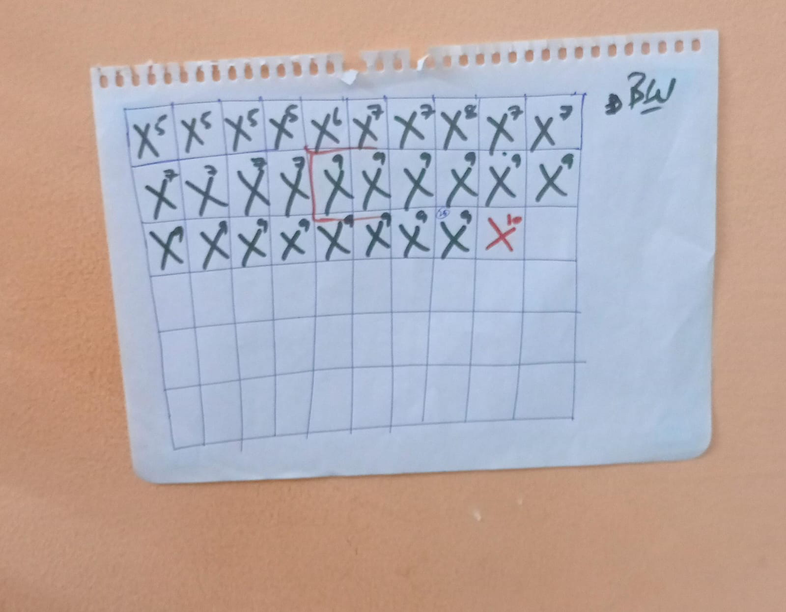

habit is all

Last updated : Apr 18, 2026
some stuff on habits :
- the quality of your life depends on the quality of your habits
- we are what we repeatedly do. excellence then is a habit - socrates
- Article : Habit is all by Pook
- Book : Superhuman by Habit - Tynan
what i am doing in context to habit :
honestly not built any very habit like habit but i am working on that current progress is :
86 days consistenty pushup no skip, reach from 5 to 20 pushup - one thing have to improve here is i ahve to fix time like in morning to make a proper habit till now i have been doing just any time in a day...
second habit is deep work i ahve started with 30 min, i wake up at 7:50am and fresh then from 8 to 8:30am i work most time i solve one dsa question,i have been doing it from 21 days now i am thinking to increase to 40 min , wake up 7 40 and from 7:50 to 8 30 i will work , moast important thing i have learnt is prepare one night before what you have to do